← 返回阅读库 · 原论文目录
论文讲解阅读文档 · 表征学习 · v191
Data-Efficient Image Recog with Contrastive Predictive Coding[1905.09272]
视频时长 00:06:15；讲解文字 2,571 字符；提取讲解画面 13 张。按视频原顺序阅读，每段文字保留时间戳。
文字来自整段视频的自动语音转写，按自然停顿分段，并与 PPT / 论文页面 / 演示画面对齐。未将讲解压缩为摘要；术语、数字和口述公式请结合画面及原论文核对。 阅读稿已校正规范部分明确术语误识别；原始逐字稿和每处修改记录另行保留。
讲解画面为源视频截图（640×360），不是可编辑 PPT 文件。全片按每秒 2 帧扫描内容变化，逐步展开页保留；连续动画保留代表画面。清晰度受源视频限制。
下载完整资料包 · 含离线 HTML、PDF、Word、全部 PPT 画面和字幕。
原论文与材料
Data-Efficient Image Recognition with Contrastive Predictive Coding · 下载完整 PDF（13 页）
按时间阅读
00:00:00–00:00:38 · 画面 001
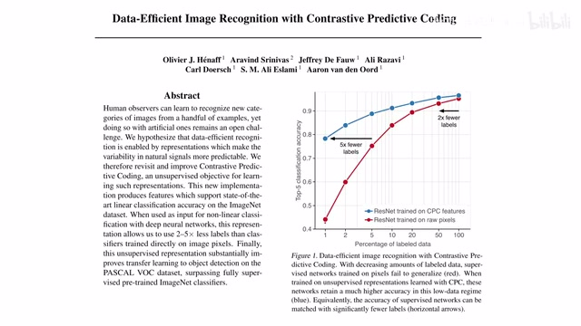
00:00:00–00:00:38 · 画面 001大家好,今天我们来快速说一篇论文 Data-Efficient Image Recognition with Contrastive Predictive Coding 这篇论文是我们之前的 CPC 的延续,现在叫它 CPCv2 它主打的就是 Data Efficient,原来有更高的数据利用的效率那么如果你不了解这个 CPC 也就是 InfoNCE 的这个提出的这个文章非常建议呢你先去看我们之前的一个视频包括它里面的一些数学的推导那么链接呢在我们的视频的简介里面那么我们来看看在这个版本作者给我们提供了哪些改进吧首先一个快速的回顾啊我们的 CPC 是干什么的这个原始的信息扔到一个 Encoder 里面然后呢再过一个有记忆的比如说 LSTM 这样的网络里面
00:00:38–00:00:49 · 画面 002
00:00:38–00:00:49 · 画面 00200:00:49–00:00:54 · 画面 003
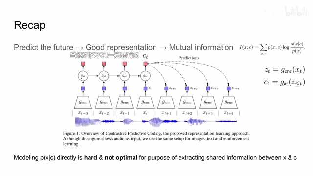
00:00:49–00:00:54 · 画面 003然后我们就可以对未来的信息来进行预测那么 CPC 的目标就是要提升我中间的 hidden state 和我们原始的信息的 mutual information 这样子就得到一个更好的 representation 那么在这篇论文里我们主要的关心就是视觉上的改进那么这个时候有朋友就会问了一张图像就一张图像嘛对吧怎么会对未来做的预测呢
00:00:54–00:01:23 · 画面 004
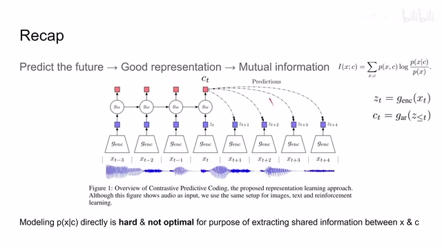
00:00:54–00:01:23 · 画面 004那么这个当然也是可以的只要思想不滑坡办法总比困难多嘛那么我们来看到这里那么同第一个版本的 cpc 一样呢这里呢我们把单张图像呢还是拆成一个个小的这个 patch 然后当我想预测某一个 patch 的时候呢我就用顶上的一些 patch 对它呢来进行一个预测它的主干的网络呢是一个 resnet
00:01:23–00:02:20 · 画面 005
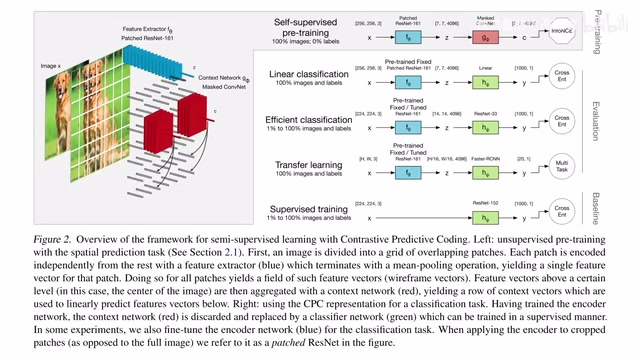
00:01:23–00:02:20 · 画面 005它把我们原来的 256x256 的图像变成了 7x7 个 patch 每个 patch 是用 4096 的这样一个长度的 vector 来描述的就是这个图像里面白色的小长棍比如说我以这个 patch 为例我要预测它未来的几个 patch 这里所谓的未来目前指的是这个 patch 下面的几个 patch 我要对未来产生预测这个时候呢我们就可以利用这个 patch 上面的若干的这个 patch 然后呢对下面来产生预测而使用的 loss 呢是我们后面在 contrastive learning 里面非常常用的这个 InfoNCE 那它的原理呢就是和这个 positive samples 也就是我们的 ground truth 尽量的相似和其他的这些 sample 就是图像中随便其他位置踩的 sample 这个 negative samples 尽量的远离
00:02:20–00:02:25 · 画面 006
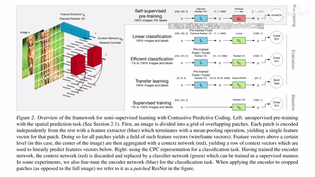
00:02:20–00:02:25 · 画面 00600:02:25–00:03:21 · 画面 007
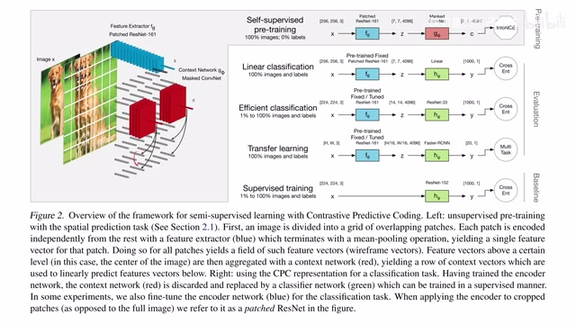
00:02:25–00:03:21 · 画面 007那么这种配置相对于 MSE 呢有诸多的优势已经逐渐成为我们做这种 prediction 还有做 reconstruction 这种比较好的选择那么这个呢就是我们如何把 CPC、InfoNCE 应用到我们图像的里面让它去学一个好的 representation 那么学好这个 representation 学好这个 encoder 之后呢我们可以看到作者的这些评估的方法这些都是评价这个 representation learning 的一个很标准的方法了加一个 linear layer 然后 fine-tune 还有 transfer learning 等等这里提一下因为他做的这个图是真的不错方便你直观的了解我们是怎么样评价这些 self-supervised learning 的这些方法当然还有这些 supervised 方法那么下面我们来看到这个版本的 cpc 相对于之前作者给我们带来的哪些改进首先我们看到这里主要有 5 条改进
00:03:21–00:03:22 · 画面 008
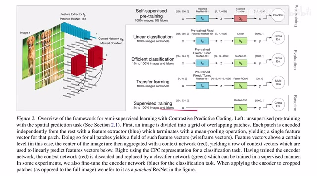
00:03:21–00:03:22 · 画面 00800:03:22–00:03:30 · 画面 009
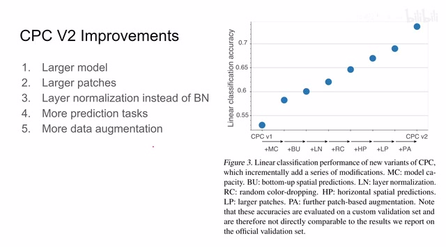
00:03:22–00:03:30 · 画面 00900:03:30–00:03:32 · 画面 010
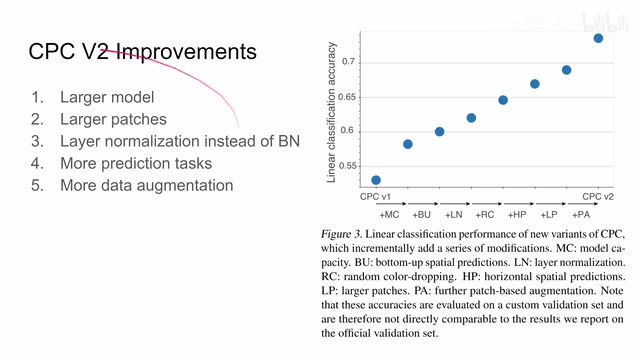
00:03:30–00:03:32 · 画面 01000:03:32–00:05:22 · 画面 011
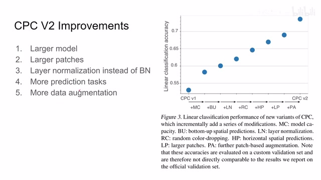
00:03:32–00:05:22 · 画面 011那么面对的这些改进呢我们的模型的性能呢也是从一开始的版本呢逐渐提升首先第一个呢是使用了更强力的模型原来是只有 ResNet 中三个 block 嘛现在用了更多的 block 然后呢它的网络的宽度呢也变大了那么这个呢是 MC 很直观的一个提升那么然后呢是使用了这个更大的这个 patch原来是 64x64 的 patch 现在变成了 80x80 这样子一个 patch 里面包含的信息就更多了它是 LP 可以看到它这里带来一定提升那么第三个是使用 layer normalization 替代 batch normalization 那么这里作者认为说 batch normalization 因为它是一个 batch 里面的信息有相互的交互可能会让我们 CPC loss 变得更容易了
所以这里只做这个 layer normalization 就消除掉这个影响那么可以看到这个 ln 这里它在这儿性能的一个提升那么第四个是更多的预测任务那么之前我们的预测是根据上方的 patch 来预测下面未来几个 patch 当然我完全可以根据下方的 patch 来预测上面同时根据左边的 patch 来预测右边根据右边来预测左边对吧这样增加了更多的任务我们的网络就变得更强可以看到 bottom up 还有 horizontal spatial predictions 这里都会带来我们性能的提升那么最后是 patch level 的 data augmentation 我们在每一个 patch 上加 data augmentation 让我们的 encoder 不要 overfit
这个也是一个很常规的操作这里包括 random color dropping 还有 further patch based augmentation 感兴趣的朋友你可以去查看他论文的实现那么下面来看到作者汇报的一些主要结果
00:05:22–00:06:15 · 画面 012
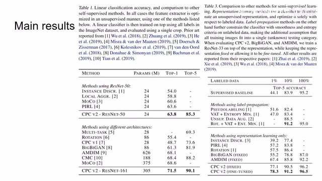
00:05:22–00:06:15 · 画面 012这个 linear classification 还有这个 semi-supervised learning 主要是这个数据的效率在这个有标记的样本数量比较少的情况下呢依然能够取得不错的性能那么总的来说呢本门更倾向于一种工程上的改进那么当然最主要的 take away 呢就是你在做未来的预测啊然后做各种 regression 的时候呢未必一定要用 MSE 这种 loss 你可以完全可以尝试一下用这个 contrastive loss那么如果您想快速的查找过去我们总结整理过的这些论文还有呢对我们未来想要谈的这个论文有什么好的提议呢我们最近新开一个公共编辑的文档在我动态的这个置顶那感兴趣的朋友呢可以去看一看那么以上就是我对这个论文的一个快速的介绍感谢您的收看再见
00:06:15–00:06:15 · 画面 013
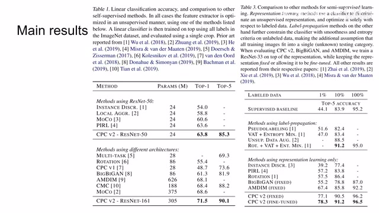
00:06:15–00:06:15 · 画面 013转写与来源说明 · 0 个自动复核提示
保留 15 个原始语音片段，0 个片段触发自动复核提示。提示仅用于定位可能的术语、重复或识别问题，不等于已确认错误。
讲解画面为源视频截图（640×360），不是可编辑 PPT 文件。全片按每秒 2 帧扫描内容变化，逐步展开页保留；连续动画保留代表画面。清晰度受源视频限制。
原视频：paper/合集_2026-10-16_表征学习/[论文速览]Data-Efficient Image Recog with Contrastive Predictive Coding[1905.09272].mp4
SHA-256：9a9bd2a874dd9eefdafc83e95e4ff486bed9b0538a61717074b0352eae71e381
全文按视频语音与画面制作。原论文可从上方链接下载；完整资料包保留全文、原始逐字稿、字幕和校对记录。